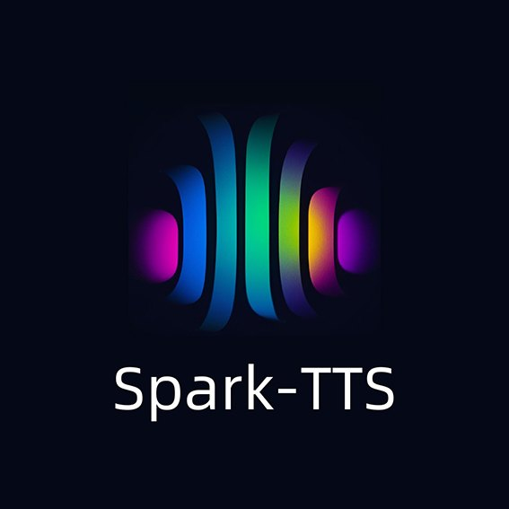
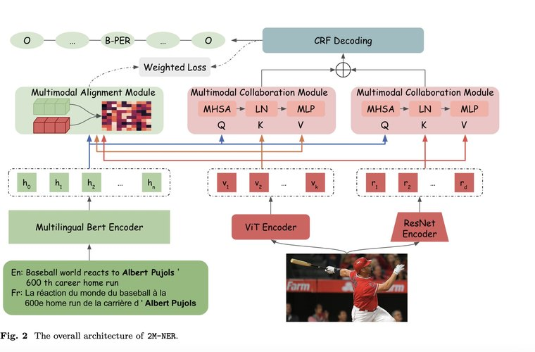
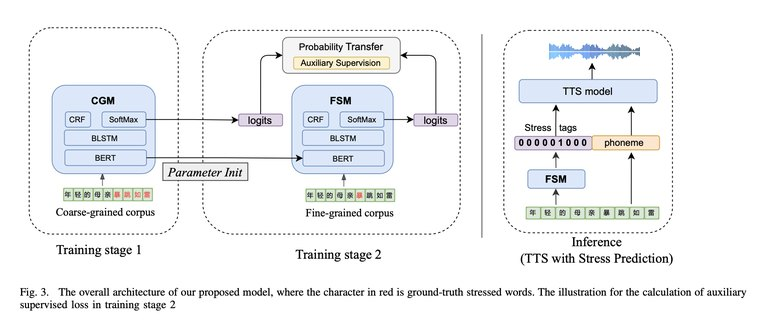
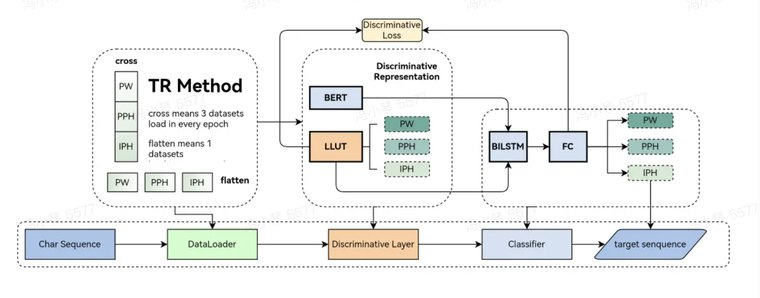
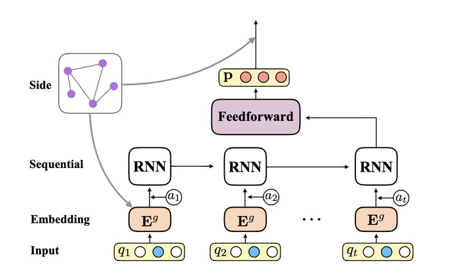
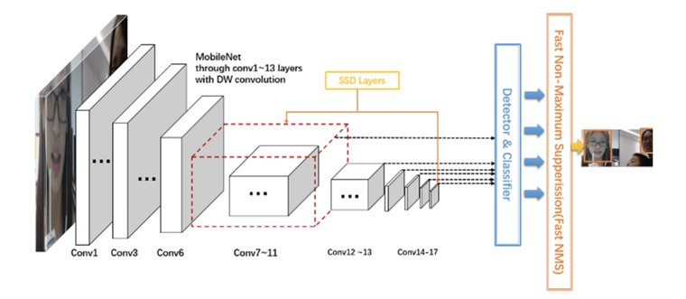
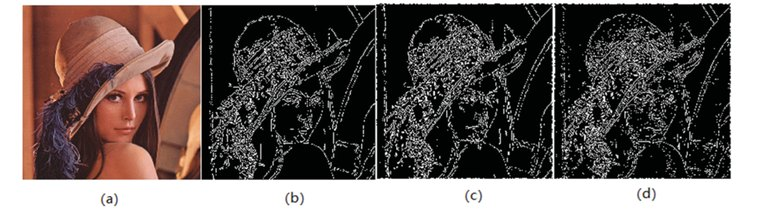
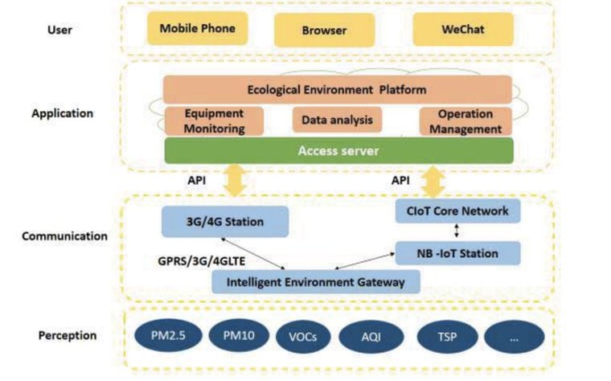

Speech & LLM algorithms
LLM supervised fine-tuning (SFT), LLM-based speech generation, prosody and stress modeling for expressive TTS, NLP for the TTS front end, and on-device spoken language identification.
Real-time audio agents, expressive TTS, and speech LLMs.
I am an M.S. student in Artificial Intelligence at the University of Southern California, graduating in May 2027. Before USC, I spent six years at Mobvoi, growing from speech algorithm engineer to tech lead. I shipped multilingual speech and NLP models to tens of millions of users, led speech-LLM services and LLM agent frameworks, and built the data and evaluation pipelines behind them.
At USC, I research computer-use and research agents: how they plan, where they break, and how to make them recover. I’m broadly interested in LLM agents, speech and NLP, multimodal learning, and human–AI collaboration.
Now, as an AI Engineer Intern at Wyze, I build AI that listens, speaks, and acts, running in real time on home cameras.
I’m looking for PhD positions and full-time ML/AI engineering roles starting in 2027. Read my CV or email me.
LLM supervised fine-tuning (SFT), LLM-based speech generation, prosody and stress modeling for expressive TTS, NLP for the TTS front end, and on-device spoken language identification.
Agentic systems for research and production: how they plan, where execution breaks, and how they recover safely.
Multimodal data pipelines and evaluation systems that tell you whether a model is actually ready to ship.
Side project, built solo
An AI-powered audio visualization and dubbing platform that turns music, podcasts, and audiobooks into editable videos with high-fidelity speech processing.
Try the demo at qinzhi.orgDeveloping and integrating core components for real-time conversational audio agents on edge devices, including model integration, automated testing, language identification, and speech-to-intent optimization.
Researched computer-use and research agents, with a focus on tool-use planning, execution robustness, and failure modes.
Optimized production speech models and LLM-based multi-agent workflows, and supported data pipelines and system integration.
Led production LLM agent frameworks, speech-LLM models and services, multimodal data engineering, and model evaluation systems; mentored junior engineers and interns.
Built multilingual speech and NLP models, scalable backend services, and standardized data pipelines for production systems serving tens of millions of users.
Developed graph-enhanced deep knowledge tracing models and co-authored work published at AIED 2019.
Expected May 2027.
Ranked top 5 of 154 students.

arXiv 2025
Applied Intelligence 2024
APSIPA ASC 2023
PRML 2022
AIED 2019
JPCS 2019
CCIOT 2018
CCIS 2018